2.6. 2D Data: Correlation and Pairwise Effects#
In some datasets, the main question of interest is not about the value of a single variable on its own, but rather about the relationship between two variables.
Important experimental examples would be:
paried designs: where pairs of participants are compared, to balance out external variables. For example:
patients and control participants are matched on age and sex before comparing the groups
repeated measures designs, where the same participant completes all conditions in the experiment For example:
A patient’s blood pressure before and after taking a drug
Reaction time on the same task with and without distraction
Here is a video about paired vs unpaired designs:
%%HTML
<iframe width="560" height="315" src="https://www.youtube.com/embed/yq5RF2MCN7Y?si=1XDbQKpZP-KYSoWG" title="YouTube video player" frameborder="0" allow="accelerometer; autoplay; clipboard-write; encrypted-media; gyroscope; picture-in-picture; web-share" referrerpolicy="strict-origin-when-cross-origin" allowfullscreen></iframe>
If we want to see the relationship between paired measurements, we need a type of plot that shows that relationship. Good examples are:
sns.scatterplot(): Displays a scatterplot showing individual data points, showing the overall pattern and strength of the relationship.sns.regplot(): Show scatterplot with regression line, or a line of best fit which can help visualise the trend and any potential linear relationship between the variables.sns.histplot(): A 2D histogram shows the density of points in each area of the plot, useful when there are many overlapping data points.sns.kde(): A 2D KDE plot shows a smoothed density estimate of the joint distribution, giving a contour-style view of where most data lie.
Here is a video about plotting paired measurements:
%%HTML
<iframe width="560" height="315" src="https://www.youtube.com/embed/lVHzI2Ktd_s?si=_112tUvkxO9ESikm" title="YouTube video player" frameborder="0" allow="accelerometer; autoplay; clipboard-write; encrypted-media; gyroscope; picture-in-picture; web-share" referrerpolicy="strict-origin-when-cross-origin" allowfullscreen></iframe>
2.6.1. Example: brother/sister heights#

A researcher hypothesises that men are taller than women. However, he also notices that there is a considerable genetic influence on height, with some families being taller than others. To control for this, he decides to compare the heights of brothers and sisters. Since the siblings will have a shared genetic influence and shared upbringing he hopes that using a paired design will help answer his main question of interest.
Note: Datasets with multiple measurements per case are often given in wide form: one row per family, and one column per measurement (e.g. brother, sister). The plotting examples below start from wideform data. A longform data file could convey the same information by using columns like height, sex, and familyID. In this case each row would represent a single person. A solution for ** longform data* is covered briefly at the end of this notebook.*
Set up Python libraries#
As usual, run the code cell below to import the relevant Python libraries
# Set-up Python libraries - you need to run this but you don't need to change it
import numpy as np
import matplotlib.pyplot as plt
import scipy.stats as stats
import pandas as pd
import seaborn as sns
sns.set_theme(style='white')
import statsmodels.api as sm
import statsmodels.formula.api as smf
import warnings
warnings.simplefilter('ignore', category=FutureWarning)
Load and inspect the data#
Load the file BrotherSisterData.csv which contains heights in cm for 25 fictional brother-sister pairs
heightData = pd.read_csv('https://raw.githubusercontent.com/jillxoreilly/StatsCourseBook_resources/main/data/BrotherSisterData.csv')
display(heightData)
| brother | sister | |
|---|---|---|
| 0 | 174 | 172 |
| 1 | 183 | 180 |
| 2 | 154 | 148 |
| 3 | 172 | 180 |
| 4 | 172 | 165 |
| 5 | 161 | 159 |
| 6 | 167 | 159 |
| 7 | 172 | 164 |
| 8 | 195 | 188 |
| 9 | 189 | 175 |
| 10 | 161 | 160 |
| 11 | 181 | 177 |
| 12 | 175 | 168 |
| 13 | 170 | 169 |
| 14 | 175 | 165 |
| 15 | 169 | 164 |
| 16 | 169 | 163 |
| 17 | 180 | 176 |
| 18 | 180 | 176 |
| 19 | 180 | 172 |
| 20 | 175 | 170 |
| 21 | 162 | 157 |
| 22 | 175 | 172 |
| 23 | 181 | 179 |
| 24 | 173 | 171 |
Independent KDE plots#
Let’s use a KDE plot to compare the heights of the men (brothers) and women (sisters) in the sample.
We’ll do this by calling the sns.kdeplot() function twice: once for the brothers’ heights and once for the sisters’ heights.
Note: By default, Seaborn will continue adding each new plot to the same figure until you explicitly call plt.show().
sns.kdeplot(data=heightData, x = "brother", fill=True)
sns.kdeplot(data=heightData, x = "sister", fill=True)
plt.xlabel('height (cm)')
plt.show()
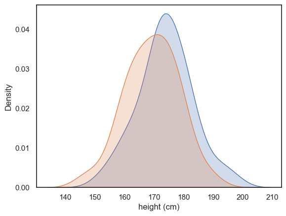
There’s quite a bit of overlap between the two distributions, with just a hint that the men tend to be taller than the women on average.
However, by comparing all the men to all the women ignores the power of our paired design! We deliberated measured brother-sister pairs in the hope of “cancelling out” shared genetic or environmental influences within families. We therefore need to ask if each brother is taller than his own sister. To do this we will next turn to a scatterplot
2.6.2. Scatterplot#
A scatter plot lets us visualise the paired nature of our data directly. Here, each dot represents a pair of siblings.
The x-axis shows the brother’s height.
The y-axis shows the sister’s height.
sns.scatterplot(data=heightData, x='brother', y='sister')
plt.xlabel("brother's height (cm)")
plt.ylabel("sister's height (cm)")
plt.show()
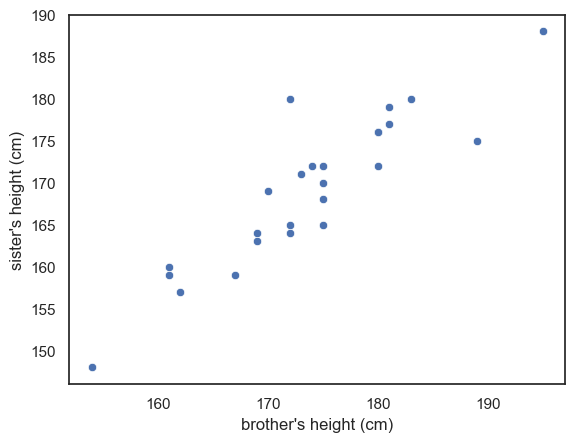
Between-pairs effect (correlation)#
From the scatter plot above, you can immediately see that there appears to be a relationship - or correlation - between the brothers’ and sisters’ heights. In other words, men that are generally tall, seem to have sisters that are also tall.
This correlation supports the idea that that genetic and environmental factors influence height and confirms that using a paired design was a sensible choice. By pairing siblings from the same family we effectively control for these shared influences. However, the correlation alone does not yet answer our main question:
Are men taller than women
The key advantage of this design is taht it allows us to cancel out the large variation between families, so we can focus on detecting much smaller difference betweeen mailes and females within each family.
Within-pairs effect (pairwise difference)#
In this study, the family effect is actually “noise”. What we really want to know, is not whether some families are overall taller, but rather whether the male sibling in each family is taller than the female sibling once the family effect is accounted for.
We can visualise this by adding a reference line to our scatter plot.
Reference line#
By drawing a line where \(x=y\) we can a point of reference to better understand the overall effect of gender on height
If all the brothers were exactly the same height as their sisters then all data points would fall exactly on the line \(x=y\)
If brothers were roughly the same height as their sisters (with some random variation) we would expect the data points to fall equally often above and below the line \(x=y\)
If brothers are generally taller than their sisters, most of the datapoints will fall on one side of the line (think about which!)
To add the line \(x=y\) we use the matplotlib function plt.plot(). The arguments of this function are the \(x\) and \(y\) coordinates of the line’s endpoints (here, both range from 150-190), and the argument ‘r–’ which sets the color (red) and line type (dashed).
sns.scatterplot(data=heightData, x='brother', y='sister')
plt.xlabel("brother's height (cm)")
plt.ylabel("sister's height (cm)")
plt.plot([150, 190],[150, 190], 'r--')
plt.show()
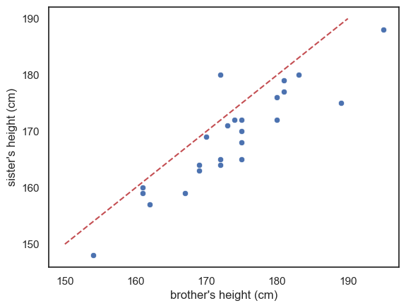
Look at the graph - most of the datapoints fall on one side of the line (below it)
This means that either most of the brothers are taller than their sisters, or vice versa - which is it? Make sure you can tell this by looking at the plot.
Exercise#
See if you can add another line of code to draw a red horizontal line at \(y=170\)
Reference line is not a regression line!!#
More commonly, when you see a line on a scatter plot, the line is a regression line (more detail below). It can be helpful to add other reference lines, such as the line \(x=y\) but these carry very different meanings from the more common regression line. To make sure your plot is clear, I suggest you use obvious colouring for reference lines (eg a red dashed line) to distinguish them from a regression line,. It should also be clearly state in the figure description (ie the text under the figure) that the red dashed line is the line \(x=y\) for reference
2.6.3. Scatterplot with regression line#
Sometimes we are actually interested in the between-pairs effect. For example, how strongly the brothers’ and sisters’ heights are related. For example, we might be interested in the shared effect of genetics/environment, and would like to make a prediction along the lines like: For each additional cm in height of the brother, we expect the height of his sister to increase by 0.8cm
This kind of statement comes from a regression analysis, which formally estimates the relationship between two variables. We will cover regression analysis in more detail later in the course
For now, let’s just look at a version of the scatter plot that includes the best-fitting regression line, using Seaborn’s sns.regplot() function:
sns.regplot(data=heightData, x='brother', y='sister')
plt.plot([150, 190],[150, 190], 'r--')
plt.xlabel("brother's height (cm)")
plt.ylabel("sister's height (cm)")
plt.show()
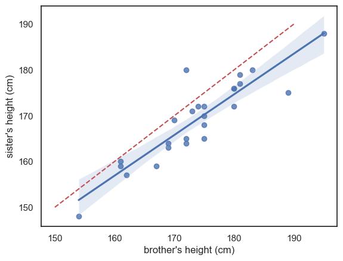
The blue line is the regression line (and the shading represents a confidence interval for the regression line - we will cover confidence intervals in detail later but basically, it reflects the fact that we are not totally sure this sample reflects all men and women in the popluation; we expect the ‘true’ regression line to fall somewhere in the shaded region)
I’ve also included (red dashed line) the line \(x=y\) for reference - we can see that the regression line is not the same as the line \(x=y\) - it falls to one side of \(x=y\) and has a slightly different slope.
If these ideas (regression line and confidence interval) are unfamiliar please think no more about it - they will be covered later in the course, but I mention this plot here so you will have available all of the commonly used plots in one chapter for revision.
2.6.4. Jointplot#
A limitation of the scatterplot is that we lose the ability to see the shape of each individual distribution (brothers’ and sisters’ heights), which we would normally get from a histogram or KDE plot. Because of this, we can’t tell from the scatterplot if:
the distribution of heights symmetrical or skewed?
the distribution unimodal or bimodal
We can get the best of both worlds by using seaborn function sns.jointplot(). This shows the relationship between two variables in the center using a scaller plot but it also shows the marginal distributions - the seperate distributions for each variable - along the top and right-hand sides.
This gives us both the pairwise relationship and the shape of each distribution in one combined figure.
sns.jointplot(data=heightData, x='brother', y='sister', )
plt.xlabel("brother's height (cm)")
plt.ylabel("sister's height (cm)")
plt.plot()
[]
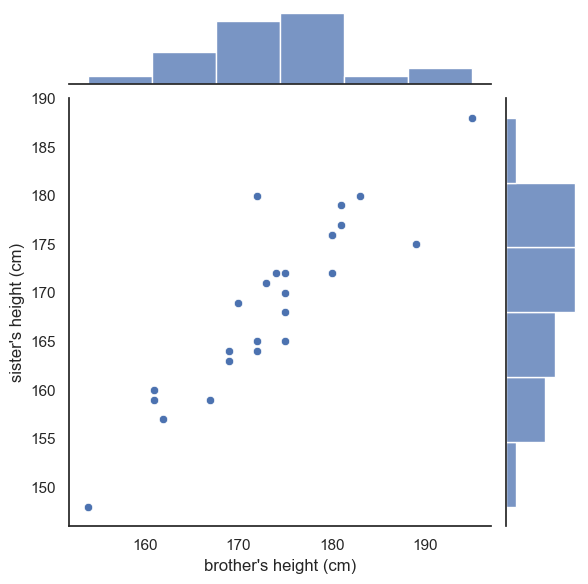
This plot is now made up of three axes: the main scatter plot, and the two marginal histograms. Therefore, if we want to adjust one of those axes, we use a set of arguments in a dictionary:
marginal_kwsare keyword argumments for the marginal histogramsjoint_kwsare keyword arguments for the scatterplot itself
You can probably just copy this syntax without worrying too much about understanding it as we don’t make heavy use of dictionaries in this course.
sns.jointplot(data=heightData, x='brother', y='sister', kind='scatter',
marginal_kws=dict(bins=range(150,200,5), kde="true"),
joint_kws=dict(color='k'))
plt.show()
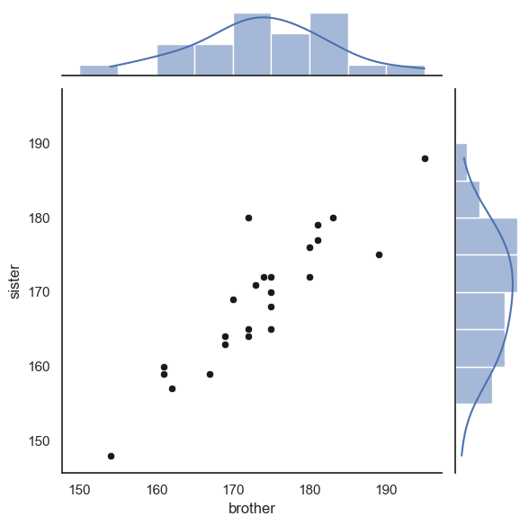
Finally, we can add the line \(x=y\).
This is a little fiddly and you will not be required to do this in an assessment - however I include it for your future reference
As the plot consists of several axes, we have to tell the computer which part of the the joint plot to add the line to, by getting a handle to the plot (see comments in the code)
# create the joint plot as before but give it a label - "myfig"
myfig = sns.jointplot(data = heightData, x='brother', y='sister', kind='scatter',
marginal_kws=dict(bins=range(150,200,5), kde="true"),
joint_kws=dict(color='k'))
# plot the line x=y onto the joint axis (ax_joint) of myfig
myfig.ax_joint.plot([150,190],[150,190],'r--')
plt.show()
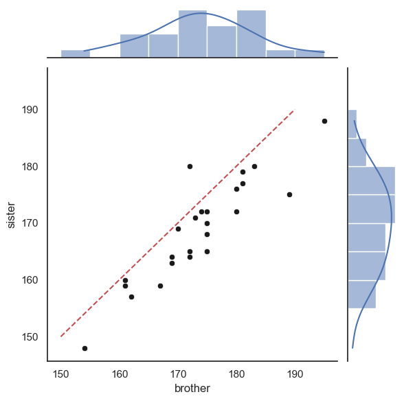
2.6.5. 2D Histogram#
The Seaborn functions sns.histplot() and sns.kdeplot() can be used to visualise two-dimensional data. They can highlight how two variables relate in terms of their joint frequency or density.
Below is a 2D histogram for our brother–sister height data, with a scatter plot overlaid on top for reference:
sns.histplot(data=heightData, x='brother', y='sister', bins=range(150,200,5))
sns.scatterplot(data=heightData, x='brother', y='sister', color='k')
plt.show()
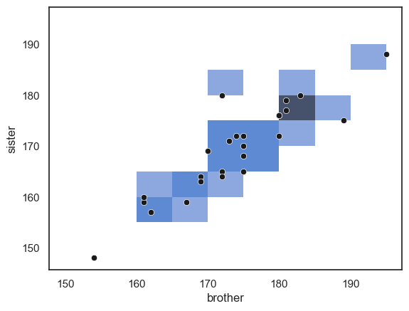
… Note that the areas (squares) with more data points in them are shaded darker blue. However, in this example the plot isn’t particularly informative. With relatively few data points, small differences in where the points happen to fall can exaggerate apparent patterns, just like what we saw with a one-dimensional histogram based on a small sample.
Large datasets#
A 2D histogram (or its smoother equivalent, a 2D KDE plot) becomes much more useful when working with large datasets, where a traditional scatter plot would become cluttered or unreadable.
For example, consider the following dataset containing height, weight, and gender information for 10,000 (fictional) people. Note these are no longer pairs of siblings!
hws = pd.read_csv('https://raw.githubusercontent.com/jillxoreilly/StatsCourseBook_resources/main/data/weight-height.csv')
display(hws)
| Gender | Height | Weight | |
|---|---|---|---|
| 0 | Male | 73.847017 | 241.893563 |
| 1 | Male | 68.781904 | 162.310473 |
| 2 | Male | 74.110105 | 212.740856 |
| 3 | Male | 71.730978 | 220.042470 |
| 4 | Male | 69.881796 | 206.349801 |
| ... | ... | ... | ... |
| 9995 | Female | 66.172652 | 136.777454 |
| 9996 | Female | 67.067155 | 170.867906 |
| 9997 | Female | 63.867992 | 128.475319 |
| 9998 | Female | 69.034243 | 163.852461 |
| 9999 | Female | 61.944246 | 113.649103 |
10000 rows × 3 columns
Let’s try making a scatterplot of the data:
sns.scatterplot(data=hws, x='Height', y='Weight')
plt.show()
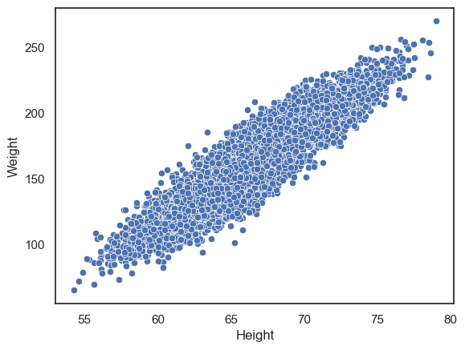
We can clearly see a positive correlation between height and weight such that taller people tend to weigh more. However, with such a large dataset, the points are packed so closely together that it’s difficult to see any detail in the relationship.
We can try instead to plot a 2D histogram:
sns.histplot(data=hws, x='Height', y='Weight')
plt.show()
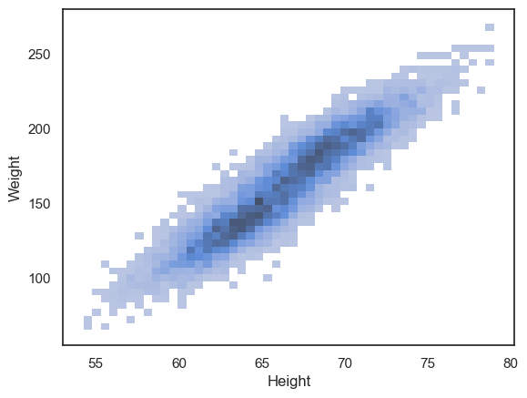
We can now see that the density of data points is highest in the centre of the cloud, and interestingly, there appears to be a hint of two separate peaks within the overall distribution. If you look closely, you’ll notice that the darkest region of the histogram dips slightly in the middle — suggesting that the data may actually come from two overlapping groups.
This becomes clearer when we plot the data separately for men and women:
sns.histplot(data=hws, x='Height', y='Weight', hue='Gender')
plt.show()
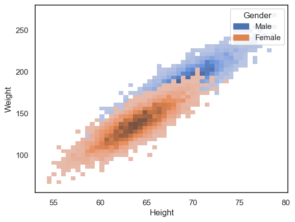
However, the data cloud for women is now occluding the data cloud for men.
Another option is to use the 2D KDE plot, which produces a kind of contour map (equivalent to the kind fo map you would take hill walking):
sns.kdeplot(data=hws, x='Height', y='Weight', hue='Gender')
plt.show()
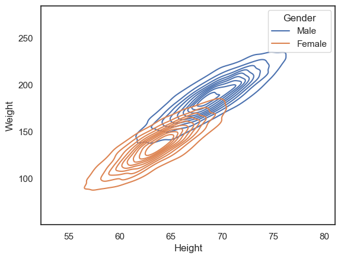
Customization#
All the plots above can be customized to highlight features of interest in the data.
Particularly relevant tweaks for these plot types are:
alpha- a number between 0 and 1 - makes plots semi-transparent when close to 0colormap
You can learn more on the seaborn reference pages for sns.histplot(), sns.kdeplot() and sns.scatter().
2.6.6. Longform vs wideform data#
Data tables can be either longform, or wideform.
In wideform (as in the examples above), each row corresponds to one ‘case’ or ‘record’ and each column corresponds to one variable
In the two examples above we have:
records = families; variables = height of brother, height of sister
records = individuals; variables = sex, height, weight
In longform data, the grouping variables are given in a column - for example in the following longform version of the brother/sister heights data, we can tell which brother and sister belong to the same family by checking the familyID variable.
heightDataLongform = pd.read_csv('https://raw.githubusercontent.com/jillxoreilly/StatsCourseBook_resources/main/data/BrotherSisterDataLongform.csv')
heightDataLongform
| familyID | sex | height | |
|---|---|---|---|
| 0 | 410119 | Male | 174 |
| 1 | 438181 | Male | 183 |
| 2 | 260033 | Male | 154 |
| 3 | 330754 | Male | 172 |
| 4 | 118173 | Male | 172 |
| 5 | 218511 | Male | 161 |
| 6 | 934515 | Male | 167 |
| 7 | 936244 | Male | 172 |
| 8 | 608784 | Male | 195 |
| 9 | 700114 | Male | 189 |
| 10 | 902900 | Male | 161 |
| 11 | 327878 | Male | 181 |
| 12 | 714099 | Male | 175 |
| 13 | 136536 | Male | 170 |
| 14 | 483548 | Male | 175 |
| 15 | 992816 | Male | 169 |
| 16 | 427440 | Male | 169 |
| 17 | 809371 | Male | 180 |
| 18 | 578843 | Male | 180 |
| 19 | 342207 | Male | 180 |
| 20 | 565176 | Male | 175 |
| 21 | 626851 | Male | 162 |
| 22 | 185965 | Male | 175 |
| 23 | 165826 | Male | 181 |
| 24 | 819334 | Male | 173 |
| 25 | 410119 | Female | 172 |
| 26 | 438181 | Female | 180 |
| 27 | 260033 | Female | 148 |
| 28 | 330754 | Female | 180 |
| 29 | 118173 | Female | 165 |
| 30 | 218511 | Female | 159 |
| 31 | 934515 | Female | 159 |
| 32 | 936244 | Female | 164 |
| 33 | 608784 | Female | 188 |
| 34 | 700114 | Female | 175 |
| 35 | 902900 | Female | 160 |
| 36 | 327878 | Female | 177 |
| 37 | 714099 | Female | 168 |
| 38 | 136536 | Female | 169 |
| 39 | 483548 | Female | 165 |
| 40 | 992816 | Female | 164 |
| 41 | 427440 | Female | 163 |
| 42 | 809371 | Female | 176 |
| 43 | 578843 | Female | 176 |
| 44 | 342207 | Female | 172 |
| 45 | 565176 | Female | 170 |
| 46 | 626851 | Female | 157 |
| 47 | 185965 | Female | 172 |
| 48 | 165826 | Female | 179 |
| 49 | 819334 | Female | 171 |
When we have multiple measurements one individual, wideform often seems more natural. Examples in which we would have multiple measurements for one individual are:
test scores before- and after- an intervention
multiple health metrics such as weight, blood pressure and pulse
responses to multiple questions in a survey
data on a single variable for paired individuals (such as height of brother/sister or husband/wife pairs)
Why would we ever use the longform format?
when the number of measurements in each ‘record’ or ‘group’ is variable (eg heights of all siblings in each family - the number of siblings will vary across families)
Your data is recorded per trial
2.6.7. Converting longform to wideform#
To convert longform data to wideform (for use with plotting functions such as sns.scatterplot and sns.regplot) we use the pandas function df.pivot
We need to tell df.pivot which variable to group by (that is, which variable indexs the datapoints that belong together), which variable to use to sort data into different columns, and which variable contains the data values (that will eventually be plottted).
Here is how it works for converting the brother/sister heights longform data into wideform:
heightDataWideform = heightDataLongform.pivot(index='familyID', columns='sex', values='height')
heightDataWideform
| sex | Female | Male |
|---|---|---|
| familyID | ||
| 118173 | 165 | 172 |
| 136536 | 169 | 170 |
| 165826 | 179 | 181 |
| 185965 | 172 | 175 |
| 218511 | 159 | 161 |
| 260033 | 148 | 154 |
| 327878 | 177 | 181 |
| 330754 | 180 | 172 |
| 342207 | 172 | 180 |
| 410119 | 172 | 174 |
| 427440 | 163 | 169 |
| 438181 | 180 | 183 |
| 483548 | 165 | 175 |
| 565176 | 170 | 175 |
| 578843 | 176 | 180 |
| 608784 | 188 | 195 |
| 626851 | 157 | 162 |
| 700114 | 175 | 189 |
| 714099 | 168 | 175 |
| 809371 | 176 | 180 |
| 819334 | 171 | 173 |
| 902900 | 160 | 161 |
| 934515 | 159 | 167 |
| 936244 | 164 | 172 |
| 992816 | 164 | 169 |
From this point, everything works just as before — you can continue exploring and plotting your own data using the same techniques we’ve practised throughout this exercise.
When you first read in your dataset, take a moment to check whether it’s in long or wide form. This will help you decide which plotting functions (and which syntax) will work best, since some Seaborn functions expect long-form data (one observation per row), while others handle wide-form data directly.
Being aware of your data’s structure will save you time and make your plotting smoother and more intuitive.